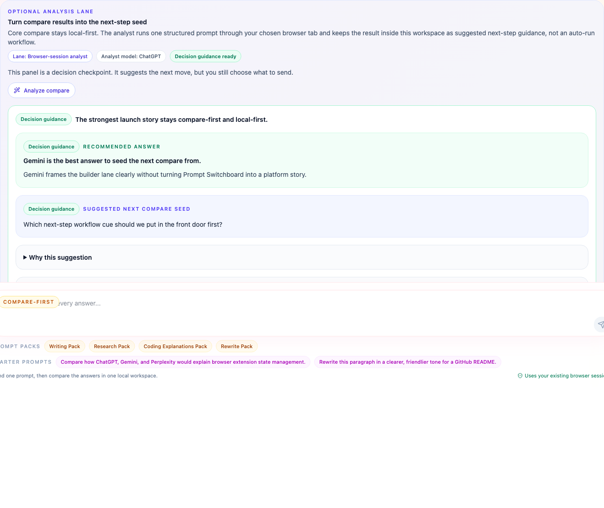

Copy the right MCP setup without guessing what Prompt Switchboard really supports.
Prompt Switchboard is a compare-first browser workspace with a governed local MCP sidecar. These starter kits remove setup friction for the strongest current host flows and keep the weaker ecosystem paths honest.
If you are brand new here, get one compare run working first, then come back for the builder lane. This page is meant to shorten host setup after the compare-first path already makes sense.
The supported install path today is the packaged GitHub Release zip. Browser-store submission materials are being kept ready, but GitHub Releases remains the supported install surface today. Start with the install guide and keep the trust boundary close when you wire a builder lane.
What the kits connect to
These kits are not just config snippets in a vacuum. They connect to a real builder-facing browser surface, a real workflow panel, and the built-in analyst lane that already ships in the repo.


Current support matrix
| Surface | Current truth | What to use | Where it goes |
|---|---|---|---|
| Codex | Strongest repo-specific host path today | codex.config.toml.example | Paste it into the Codex MCP server section in your config.toml. |
| Claude Code | Strongest repo-specific host path today | claude.mcp.json.example | Paste it into your Claude Code MCP config such as .mcp.json. |
| OpenCode | Compatibility-note setup plus a public-ready bundle packet through its generic MCP client flow | opencode.jsonc.example, opencode.skill.prompt-switchboard.md.example, public-bundles/opencode-plugin/ | Save it as a project-root opencode.jsonc inside your Prompt Switchboard clone or publish the packet later. |
| OpenClaw | Starter-kit setup plus a public-ready bundle packet through generic MCP config or registry usage, not a verified repo-owned host lane | openclaw.mcp.servers.json.example, openclaw.mcp.set.example.sh, openclaw.skill.prompt-switchboard.md.example, public-bundles/openclaw-bundle/ | Use openclaw mcp set or place the server definition under mcp.servers, or publish the packet later. |
Codex and Claude Code remain the repo's strongest documented host bindings. OpenCode and OpenClaw are real MCP-capable ecosystem surfaces, and this repo now ships public-ready packets for them, but they still live below the “verified host lane” bar.
The machine-readable version of this matrix lives in mcp/integration-kits/support-matrix.json and is also exposed by the MCP resource prompt-switchboard://builder/support-matrix.
The public-facing bundle and listing truth now also lives on the public distribution matrix and the MCP resource prompt-switchboard://builder/public-distribution, so you can quickly tell the difference between “copyable now” and “officially listed already”.
When you want a one-host install packet instead of the whole matrix, use the host packets page.
When host setup looks correct but a compare still feels brittle, use prompt-switchboard://sites/capabilities alongside prompt-switchboard://builder/support-matrix. One answers “which file goes where”; the other answers “which site surface is Prompt Switchboard really prepared to drive today.”
Always start here
- Run
npm run mcp:operator -- doctorto check the local bridge state. - Start the sidecar with
npm run mcp:operator -- server. - Load the unpacked extension in the same browser profile.
- Use a client-specific starter kit only after the local sidecar path is healthy.
- Run
npm run release:host-kitswhen you need the current host packets packed into local artifacts.
Smallest useful flow vs full follow-through
If you are wiring Prompt Switchboard for the first time, do not force every tool into the very first test. Start with the shortest truthful loop, then layer workflow tools on top after compare is healthy.
| Goal | Calls |
|---|---|
| Smallest useful compare-first loop | prompt_switchboard.bridge_status -> prompt_switchboard.check_readiness -> prompt_switchboard.compare |
| Preferred full follow-through | Add prompt_switchboard.analyze_compare, then prompt_switchboard.run_workflow, then inspect or continue with get_workflow_run, list_workflow_runs, and resume_workflow. |
Codex and Claude Code
These remain the repo's strongest host bindings because the current MCP surface, docs, and starter kits all line up here.
Replace /absolute/path/to/multi-ai-sidepanel with the real path to your own Prompt Switchboard clone before you save any of these snippets.
Codex snippet
[mcp_servers.prompt_switchboard] command = "npm" args = ["run", "mcp:server"] cwd = "/absolute/path/to/multi-ai-sidepanel"
Claude Code snippet
{
"mcpServers": {
"prompt_switchboard": {
"command": "npm",
"args": ["run", "mcp:server"],
"cwd": "/absolute/path/to/multi-ai-sidepanel"
}
}
}
OpenCode and OpenClaw
These are still compatibility-note paths, not verified repo-owned host lanes. The value of these examples is speed: they give you the right config shape faster, without pretending Prompt Switchboard already owns a first-class integration story there.
OpenCode generic MCP client example
{
"$schema": "https://opencode.ai/config.json",
"mcp": {
"prompt_switchboard": {
"type": "local",
"command": [
"npm",
"--prefix",
"/absolute/path/to/multi-ai-sidepanel",
"run",
"mcp:server"
],
"enabled": true
}
},
"permission": {
"prompt_switchboard_*": "ask"
}
}
OpenClaw MCP registry example
{
"mcp": {
"servers": {
"prompt_switchboard": {
"command": "npm",
"args": [
"--prefix",
"/absolute/path/to/multi-ai-sidepanel",
"run",
"mcp:server"
]
}
}
}
}
OpenCode's official docs support local MCP server configuration under mcp. OpenClaw's official docs support both openclaw mcp serve and an OpenClaw-managed MCP registry under mcp.servers. These examples cover the generic config path, and the same folder also carries public-ready bundle packets plus companion skill templates for all four documented hosts. None of these files claim a verified Prompt Switchboard host lane, published plugin package, or deeper workflow proof.
If you want the quickest honest reading of current support, use the starter-kits README for prose and the support-matrix JSON or MCP resource for automation-friendly truth, including per-host asset paths, placement hints, and the first MCP calls to make after setup.
Additional starter assets
| Asset | Why it exists |
|---|---|
support-matrix.json | Machine-readable truth split for supported, partial, public-bundle-ready, and planned host surfaces. |
codex.skill.prompt-switchboard.md.example | Starter skill prompt for Codex sessions that want the standard compare-first MCP loop. |
claude.skill.prompt-switchboard.md.example | Starter skill prompt for Claude Code sessions that want the same compare-first flow. |
opencode.skill.prompt-switchboard.md.example | Starter skill prompt for OpenCode sessions that want a compare-first MCP loop. |
openclaw.skill.prompt-switchboard.md.example | Starter skill prompt for OpenClaw sessions once the MCP registry entry already exists. |
First calls after setup
prompt_switchboard.bridge_statusprompt_switchboard.check_readinessprompt_switchboard.compareprompt_switchboard.analyze_compareprompt_switchboard.run_workflow
Workflow follow-through stays on the same session-scoped lane:
prompt_switchboard.get_workflow_run reads the latest
snapshot, prompt_switchboard.list_workflow_runs lists
recent snapshots, and prompt_switchboard.resume_workflow
continues a waiting run once you have the external step result.